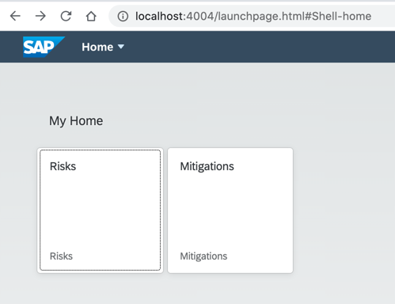

Add More Than One Application to the Launch Page
Prerequisites
- Get Started
- Create a CAP-Based Service
- Create an SAP Fiori Elements-Based Application
- Add Business Logic to Your Application
- Create a Freestyle UI5 Application
The results of the previous module Create a Freestyle UI5 Application can be found here.
Our risk application has been generated by the SAP Fiori Tools Generator in a way that it sits within a local launch page. This page looks like a real SAP Fiori Launchpad (FLP), but is just a local copy of the otherwise centrally managed FLP. It comes with a limited version of the functionality of the original FLP. There's no option to add or remove apps via a configuration, user roles aren't at all taken into account, and end-user personalization is also not included. If you want these and other FLP functionalities included, you've got to set them up for your project. Find out how to do this in section Add the SAP BTP Launchpad Service. You stick with the launch page for this section though.
In the current implementation, the launch page is sitting inside the application. You can find the launch page within your project at app/risks/webapp/index.html. If you now create a second application using the FE generator within your project, it will be generated in the same way, again with its own separated launch page. Instead, you want to use one launch page for all the applications. The UI5 freestyle mitigations application that you created in the Create a Freestyle UI5 Application section doesn't have its own launch page. You can also add that app to the launch page FE risk app. You just need to move the launch page from its original location in the FE risk app and adjust it so it still works in the new location.
-
In your file explorer, navigate to
app/risks/webapp. -
Move the file
index.htmltwo folders up to theappfolder.As you've now moved up the file two folders, this needs to be reflected in the URL that points to the app in the launch page. In the next steps, you change the URL and also give the path to the application a more fitting name.
-
Open the file
index.htmlin an editor and change the following lines or just replace the existing code with this one here:<script> window["sap-ushell-config"] = { defaultRenderer: "fiori2", applications: { "risks-app": { title: "Risks", description: "Risks", additionalInformation: "SAPUI5.Component=ns.risks", applicationType: "URL", url: "./risks/webapp", navigationMode: "embedded" }, "mitigations-app": { title: "Mitigations", description: "Mitigations", additionalInformation: "SAPUI5.Component=ns.mitigations", applicationType: "URL", url: "./mitigations/webapp", navigationMode: "embedded" } } }; </script> -
Rename the file from
index.htmltolaunchpage.html.Name change of the index file
You can also change the name of the file, as
cds watchlooks for aindex.htmlfile in theappfolder. Ifcds watchfinds one, it replaces the default page that also contains the links to the services with the one in the folder. While this makes sense in many cases, for development purposes we stick to the index page of CDS. -
With
cds watchrunning, open the app in your browser on http://localhost:4004/launchpage.html#Shell-home. -
You now see the
mitigationsapp next to therisksapp on the launch page.
The result of these steps can be found here.